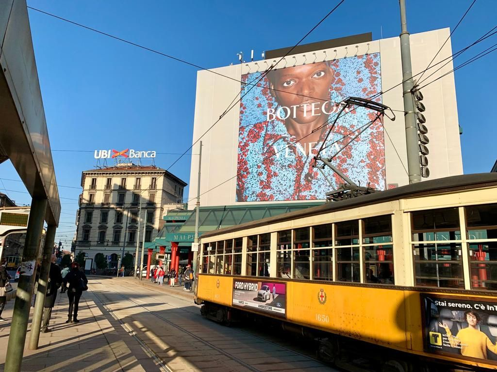
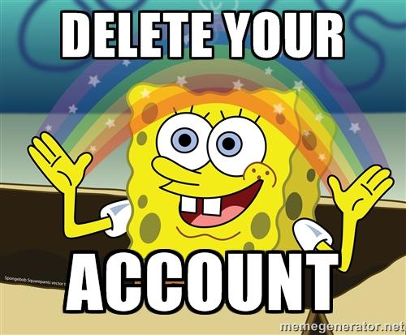
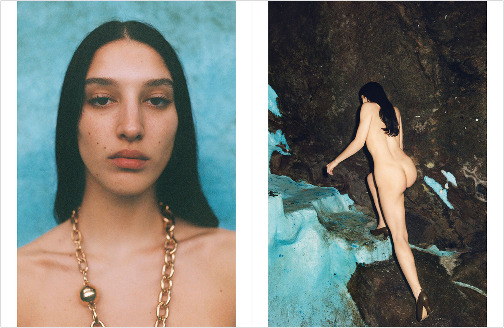
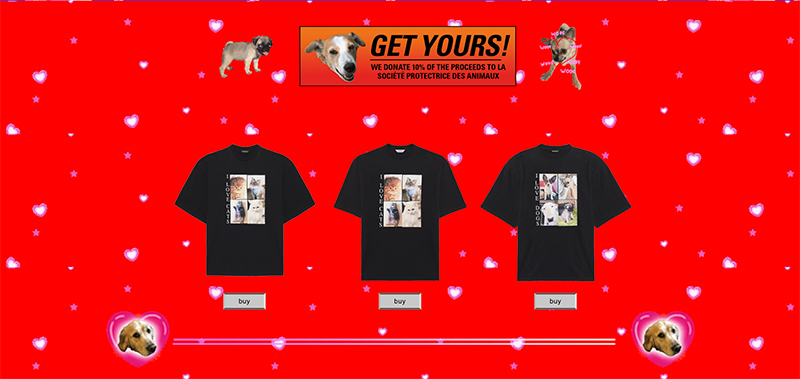
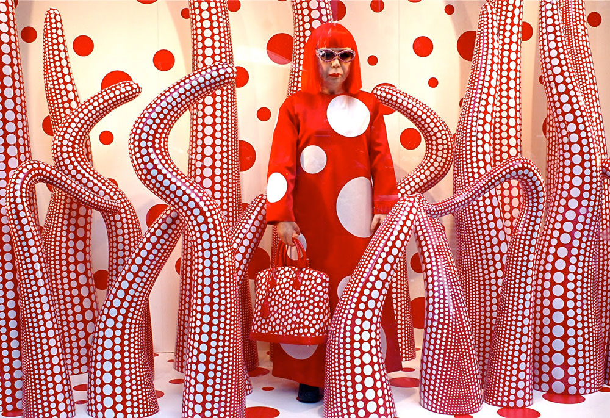

Blog posts
Bottega Veneta has left social media platforms. When will other brands follow-suit?
There was a lot of coverage when Bottega Veneta deleted themselves from social media platforms in January 2021, while Instagram and the likes are considered as big money making machines for brands. But are they really?
In 2017, Procter & Gamble cut around $200 million of its advertising spending in the digital space, due to concerns about bot fraud and brand safety. This money was reinvested in more traditional advertising channels, like television and radio. The outcome? P&G reduced its overall spending and still increased the reach of its messaging by 10%.
Is Bottega Veneta using the same strategy and investing their money in more traditional channels, like huge billboard ads, magazine ads but still covering social media by gifting to influencers? What else do they have under their hood? What we know for sure is that social media platforms are failing to truly capture attention or influence consumer behaviour. So brands have better come up with an advertising strategy where they rely less on them.
Online advertising wasn’t always bad. Today it’s pretty toxic.
While online advertising has undeniably made products & services more accessible, today it often feels like it’s the opposite - it’s making our lives more difficult. If you do a google-search today, you will see that the first two pages of results will be ads - pretty annoying. Advertising funded search-engines are biased towards the advertisers and not the needs of the consumers.
Huge part of online advertising is responsible for “attention crisis”, “deep surveillance based-profiling” and “bias toward inflammatory content”. These are all outcomes of advertising-based business models of the websites and apps we offer so many hours of our life...
It is impossible to think about the future of the web without thinking about the future of advertising. Changes in how attention is bought and sold online will have major consequences not only for our everyday experience of the web but also for self-expression, identity and democracy. We are sure you all heard the news.
Is this another financial bubble? Is it going to pop?
What if the advertising revenue from social media platforms [Instagram/Facebook👀] and search engines [Google👀] were to decline rapidly, and more brands follow the path of P&G and Bottega Veneta, withdrawing themselves from these channels? The ripple effects of such a crisis in online advertising would fundamentally change how we consume and navigate the web.
“But we can’t delete ourselves from Instagram. We need the data”
It is technically possible for brands to know that this ad was viewed by this individual, at this time, in this location. It’s possible to know if the individual has bought the advertised product. Deeper context, however, remains blurry. This matters because this opacity allows market bubbles to form.
Modern advertising is blurry for 3 reasons:
• Ever increasing automation of the marketplace.
• The creation of dark pools of liquidity where advertising inventory is bought and sold outside the public eye.
• The dominance of platforms like Facebook and Google, who have frequently introduced new layers of blurriness into the advertising marketplace.
On top of this murkiness, 56% of digital ads online are never seen by a human [according to a Google report from 2014] and the fact that people pay less attention to ads AND people love ad-blocking. $21.8 billion in global ad revenue is lost each year to ad blockers according to Adobe in 2015.
There are other ways for luxury fashion brands to reach their audience...
Today online ads fail to truly capture attention or influence consumer behaviour and it’s getting worse. So if this system collapses, what are the best alternatives?
• Less noise, more quality. Bottega Veneta’s campaigns are basically fine art photography.

• Less ads, more content. How about short films? In 2014 Prada partnered with Wes Anderson and Roman Coppola for their ads, and produced short films for the brand.
• Creative websites. Most recently in December 2020, Balenciaga created 90s inspired website for their 'I Love Pets' capsule collection. Fun.

• Video games. In 2020 Gucci has collaborated with Sims for their collection. You can dress and accessorize your sims characters with Gucci hats, backpacks and sneakers.
• Make the shopping windows into a mini-exhibition. In 2012 Louis Vuitton collaborated with Yayoi Kusama on a collection and they have transformed 24 windows of the department store Selfridges in London, making the visit to the shopping windows worthy of a museum exhibition.

FINAL THOUGHTS
The possibilities are endless. All the money brands would save from not investing into online, they can channel those into their campaigns that make an impact. Just like before online ads existed...
Main source: Tim Hwang's Subprime Attention Crisis
Date: 2021. march 10.